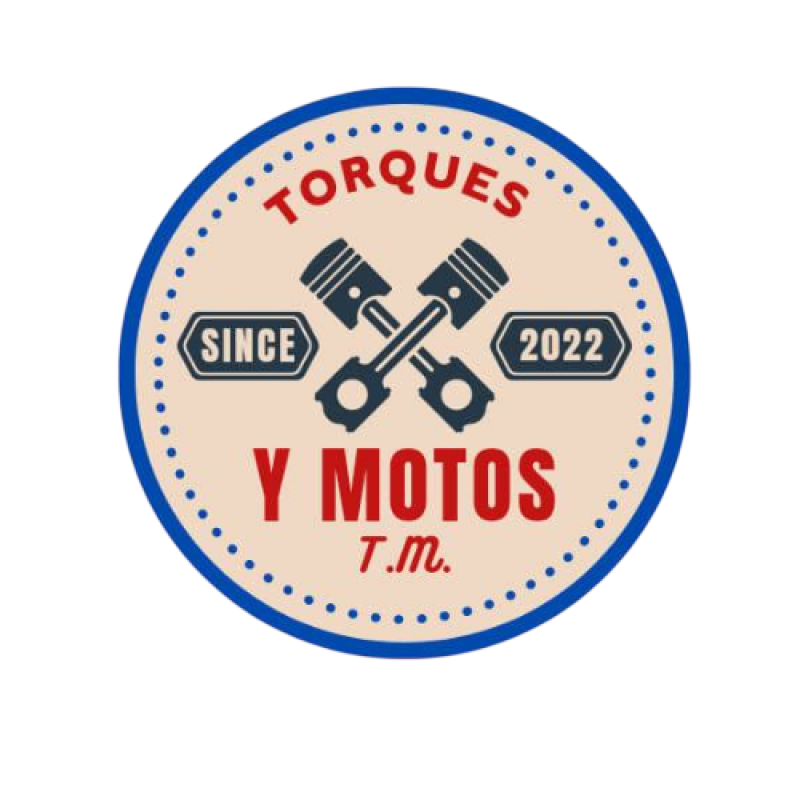

🧼
Manténla limpia
Limpia regularmente la moto para evitar que la suciedad y otros residuos se acumulen en sus componentes.

Consejos, mantenimiento y seguridad para disfrutar tu moto.
Una moto bien cuidada puede ofrecer un mejor funcionamiento, mayor seguridad y una experiencia de conducción más agradable. Aquí encontrarás consejos sencillos para el día a día.
Pequeños cuidados pueden ayudarte a mantener tu motocicleta en buenas condiciones.
Limpia regularmente la moto para evitar que la suciedad y otros residuos se acumulen en sus componentes.
Comprueba periódicamente frenos, cadena, luces, llantas y otros elementos importantes.
Utiliza el manual de tu motocicleta para conocer los intervalos de mantenimiento recomendados.
Si encuentras una falla que no puedes solucionar, consulta con un mecánico capacitado.
El aceite ayuda a lubricar y proteger las piezas internas del motor. El intervalo de cambio depende de la motocicleta, el tipo de aceite y las condiciones de uso.
Revisa el dibujo de la banda de rodamiento y los indicadores de desgaste.
Las grietas, cortes o deformaciones pueden indicar que la llanta necesita revisión.
Comprueba la presión con regularidad y utiliza la recomendada por el fabricante.
La edad de una llanta también importa. Revisa su fecha de fabricación y consulta las recomendaciones del fabricante.
Una batería descargada puede dificultar o impedir el arranque.
Si el motor de arranque gira lentamente, puede ser necesario revisar la batería y el sistema eléctrico.
La corrosión o suciedad en las conexiones puede afectar el funcionamiento eléctrico.
Si la batería se descarga repetidamente, conviene revisar el sistema de carga de la motocicleta.
Las luces del tablero pueden variar según la marca y modelo. Consulta siempre el manual de tu motocicleta.
Puede indicar que es necesario revisar alguna función de la motocicleta.
Algunos modelos utilizan indicadores para mostrar el funcionamiento de las luces.
Indica que la transmisión se encuentra en punto muerto.
Algunos indicadores simplemente informan sobre una función activa de la motocicleta.
Elementos adecuados para pequeñas revisiones.
Protección para las manos durante una revisión.
Útil para revisar la moto en lugares con poca luz.
Un pequeño botiquín puede ser útil durante un viaje.
Para mantener cargado el teléfono.
Para comunicación y emergencias.
Utiliza equipamiento apropiado y certificado para protegerte durante tus recorridos.
Utiliza un casco adecuado y correctamente ajustado.
Una chaqueta adecuada puede ofrecer protección adicional.
Protegen las manos y mejoran el agarre.
Utiliza calzado cerrado y apropiado para conducir.
Comprueba presión, desgaste y estado general.
Comprueba el funcionamiento de ambos frenos.
Revisa aceite y otros fluidos indicados por el fabricante.
Conoce el recorrido y los lugares donde puedes detenerte.
Asegúrate de que funcionen correctamente.
Haz pausas durante viajes largos para evitar la fatiga.
Depende del modelo y del uso. Consulta el manual del fabricante y realiza revisiones periódicas.
No es recomendable. Utiliza el tipo y viscosidad especificados por el fabricante.
Revisa los indicadores de desgaste, el dibujo de la banda y cualquier grieta, corte o deformación.
Consulta el manual de tu motocicleta para identificar el indicador. Si señala una falla importante, detente en un lugar seguro y solicita asistencia.
Comprueba llantas, frenos, luces, niveles, cadena, batería y el estado general de la motocicleta.
Una selección visual para los amantes de las motocicletas.
Visita nuestra tienda virtual para encontrar repuestos, cascos, accesorios y equipamiento.
🛒 VISITAR TIENDA